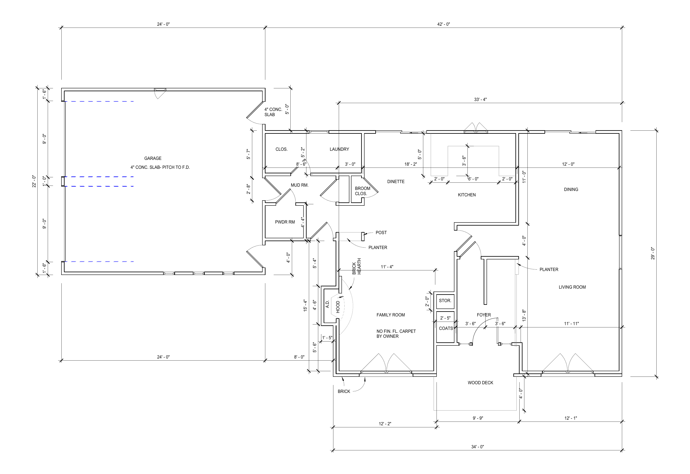
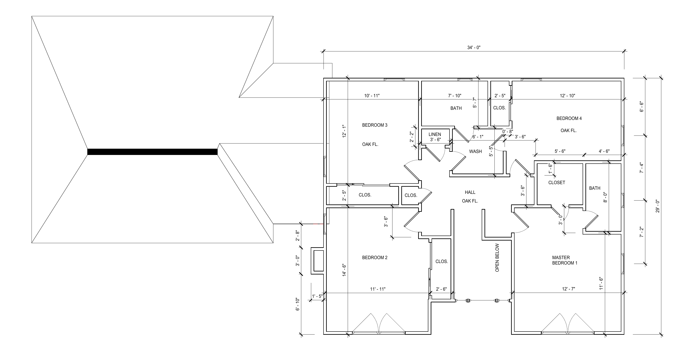
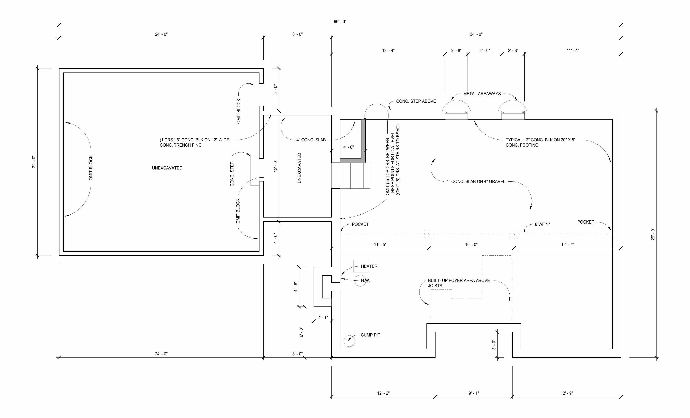
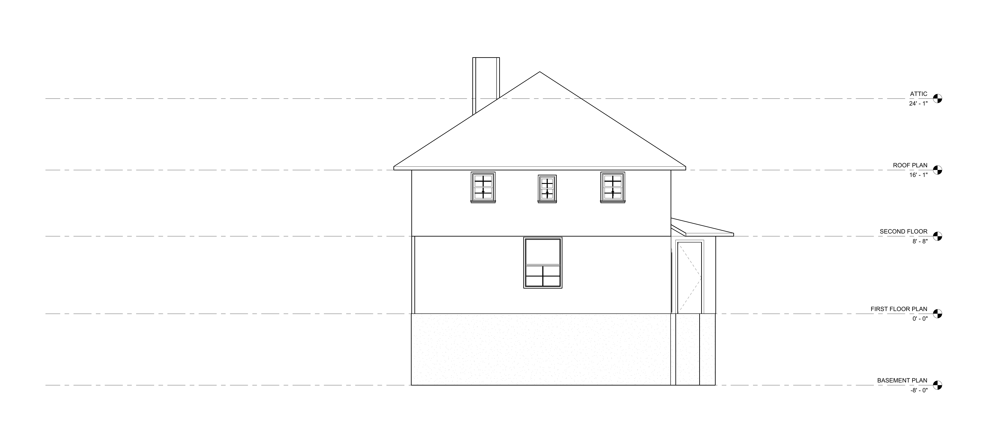
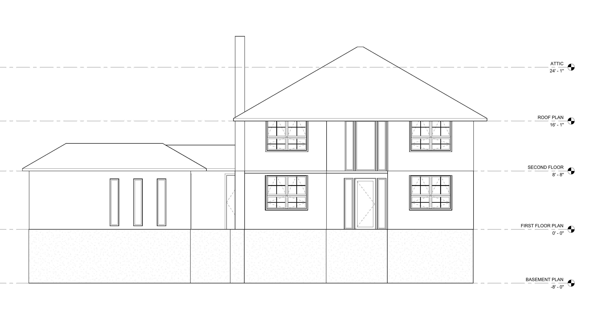

Residential Renovation · Northline Architects · 2025
Butler Residence
Two-story residential renovation — existing conditions redrawn in Revit from 1960s hand-drafted construction documents, producing floor plans, elevations, and an existing-proposed overlay as the baseline for a proposed addition scope in Rochester, NY.
Project Overview
The Butler Residence project involved redrawing and updating existing construction documents for a two-story single-family home in preparation for a residential renovation. The original construction drawings, produced in the 1960s by Charles Dye & Sons Home Builders for Mr. & Mrs. Donald Anderson (Job C-2869), were hand-drafted at 1/4" = 1'-0" and required careful interpretation and digital redrawing to bring the existing conditions into a current Revit format.
The work focused on accurately capturing the existing house geometry — basement plan, first floor plan with garage, and second floor with four bedrooms — as the baseline for proposed addition scope. An overlay drawing was produced to clearly communicate the relationship between existing and proposed conditions. A 3D massing model was also developed to visualize the addition in context with the existing structure.
Project Approach
Redrawing from historic hand-drafted documents required close reading of original dimensions, construction notes, and material callouts, many of which were partially legible due to the age of the drawings. Floor plans were redrawn at current standard sheet sizes with consistent line weights, annotation styles, and drawing conventions while preserving all original dimension strings and room labels for accuracy.


Original documents: A Residence for Mr. & Mrs. Donald Anderson — Charles Dye & Sons Home Builders · Job C-2869 · Architect: Donald A. Neel
Redrawn in Revit from original 1960s construction documents at Northline Architects · Displayed for portfolio purposes





Documentation Scope
Drawing production involved digitally redrawing the complete existing house from five original hand-drafted sheets in Revit — first floor plan (garage, family room, kitchen, dining, living room, foyer), second floor plan (four bedrooms, two bathrooms, hall), basement plan (unexcavated garage side, utility area with heater and sump pit, beam and footing layout), and exterior elevations. All drawings were redrawn at current standards while preserving original dimensions and room configurations for as-built accuracy.
Existing + Proposed Overlay
An overlay drawing was prepared to communicate addition scope to the project team — placing the redrawn existing first floor plan in relationship with the proposed addition footprint to illustrate how the two connect. The overlay was produced as a reference document; proposed addition drawings were outside the scope of this internship contribution.
Redrawn Revit documents produced at Northline Architects. Displayed here for portfolio purposes only. Hasini Kadaru contributed to this project as an Architectural Intern under licensed architect supervision. Original source documents are the property of Northline Architects.